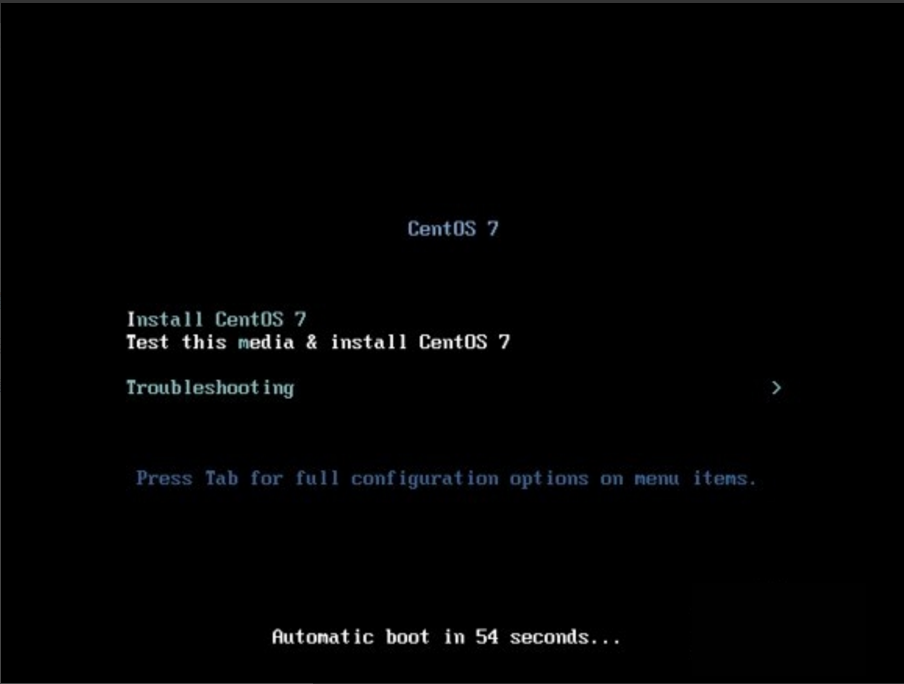

DVD ISO是啥？
Everthing ISO又是啥？
Minimal ISO又是啥？

现在是北京时间20:51，更新一下我的博客
2017年1月7日
今天真是历经千辛万苦啊！把linux系统成功安装在了自己的机械硬盘，固态硬盘就留给Win0了。
原本上午在去上自习室自习之挂着下载了centos了，以前用过，是在虚拟机上操作的linux，安装并没有遇到什么问题，但是这一次在Win10基础上安装linux真是耗尽了我的心力啊！
个人认为我遇上了几乎所有能够遇到的问题，想把经验总结到今天的日记里面！
在centos的官网选择要下载的centos版本就遇到了问题了:
DVD ISO是啥？
Everthing ISO又是啥？
Minimal ISO又是啥？
大佬来拯救我了！(づ˘ﻬ˘)づ~~~https://www.google.co.jp/
尴尬，其实这个好像并不需要google吧！会一点英文的应该都能看得懂的。
怀着满腔热血的我回来了！
因为以前曾经倒腾过无数次电脑系统，所以也就依旧循规蹈矩地用我的U盘(其实是内存卡+读卡器)进行U盘安装系统了！
1. 写入硬盘映像，用的是它——>Ultralso,很好用，一直在用这个！
2. 具体步骤如下：
启动——>写入硬盘映像——>选择硬盘驱动器——>格式化——>写入
3. 感觉那期待的心情简直就像是女朋友来看我一样，就是这样的感觉！
以小步紧跑去迎接一个人的那种快乐
然后就爆炸了！
在UEFI模式下启动U盘安装！出现了如下这些错误
根本没有进入图形安装界面！
进入图形界面之后选择不了自己在windows下建立的分区安装
能够选择分区之后，提示错误：说在UEFI启动下disk需要为GPT
OMG！我的脑袋要炸了，解决一个另一个又出来了！
下面来细细道来我是如何解决这些问题的......
当然都是google并且加上自己浅薄的英语知识来进行解决的！
没有进入图形安装界面：
错误：U盘内EFI/BOOT/grub.cfg 这个文件里面的的地址与U盘名字不一样！
原因：U盘的名字只能取到11个字符！我安装的centos的版本是:
CentOS-7-x86_64而我的U盘的名字是“CentOS-7-x8”
真尴尬啊！竟然是因为这样,感叹一番之后以为问题就解决了！
进入图形界面之后选择不了分区
错误：能看到自己分出来的区域，但是点击不了
原因：在windows情况下只要压缩一个卷，然后不能建立新加卷，只是给linux开一个空间
在压缩出好几个卷之后，与安装时候空间对比，总算是搞清楚了在windows下分区给linux只能压缩出一个空间，但是不能创建成新卷
能够选择分区，但是需要disk为GPT
这个就不好解决了，因为这样要把硬盘转换成GPT格式，硬盘东西会全部没有，所以显然对于我来说是不可行的。
1.
BIOS上设置用EFI启动U盘！我的电脑是华硕的：具体操作：启动电脑时候按住F2进入BIOS(不同品牌的电脑不一样)
进入之后的设置也是根据不同的电脑设置不一样：我的步骤是这样的：
把BIOS security的secure项改为disable
然后在Boot项把CSM改为enable
F10保存
重新启动进入BIOS，就可以在Save&Exit处选择你的U盘启动了
2.
出现以下画面的时候

按tab键，之后会出现这样的一行字：